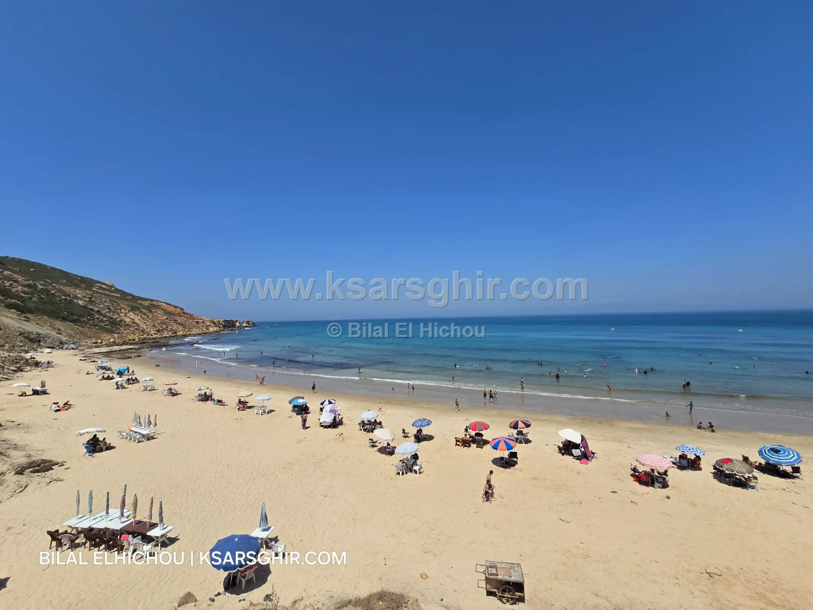

The top 3 quiet family beaches around Ksar Sghir: Oued Marsa, Dahdaha and Zrara. Family beaches away from the crowds, with facilities, access and tips.

⚡ Quick answer
Oued Marsa: quiet and family-friendly, with restaurants, shops and seasonal kiosks.
Dahdaha: a family cove among the hills, away from the crowds.
Zrara 1 and 2: two family coves among the hills, total calm.
This guide is for families looking for calm and privacy: beaches that don’t get crowded, with a respectful family atmosphere, away from the busy main beaches in August. The selection is based on a local’s experience, and all these beaches have Civil Protection lifeguards from June to September.
🏖️ The three beaches
1. Oued Marsa Beach
⭐ The most complete: family calm plus facilities
👨👩👧 Very family-friendly
🍽️ Restaurants and shops
🏪 Seasonal kiosks
🌊 Weak currents
⛵ Fishing boats
📶 Weak phone signal
About 12 km from Ksar Sghir and 2 km off the main road, which keeps it quiet. A very family-friendly beach with restaurants, cafés and shops as well as seasonal kiosks, so there’s no need to go far. Pebble beach, traditional fishing boats, weak currents. It belongs to the municipality of Taghramt.
A quiet sandy cove about 15 km west of Ksar Sghir, framed by hills, away from the crowds and the bustle of town. Seasonal kiosks in summer; restaurants and shops are in central Ksar Sghir, so bring food and water for a calm full day.
Two neighbouring coves about 20 km west of Ksar Sghir, between hills and sea. Two coves means an extra choice: if one fills up, the other stays calm. Seasonal kiosks; restaurants and shops are in central Ksar Sghir, so bring what you need.